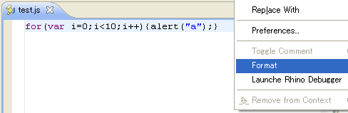
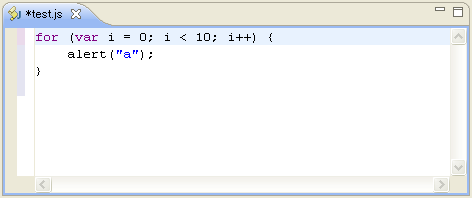
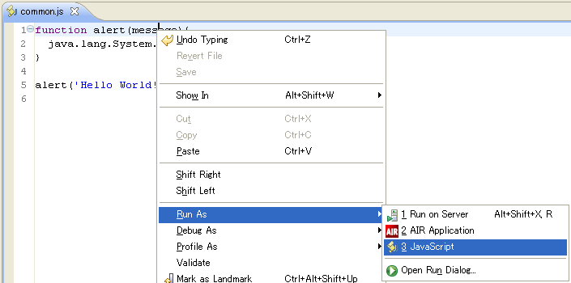

EclipseHTMLEditor provides following editors:
The HTML and JSP editors have 2 tabs: Source and Preview. Currently the Preview tab is just that--a preview of the page; it does not support visual editing such as repositioning controls, etc. To control the layout of these tabs see the Preferences Dialog.
The HTML editor provides code completion by CTRL + SPACE in many places such as:
In addition, the JSP editor provides code completion for internal Java code, JSP directives, JSP tags and JSP taglibs.
The HTML editor validates contents by JTidy. You can disable HTML validation in the project property page.
[Image]JavaScript editor provides code completion, code folding, syntax checking, code formatting and more features.
[Image]You can format JavaScript source code by the context menu of the JavaScript editor.


You can run the JavaScript file on Rhino by Run As/JavaScript. Execution results is shown in the Console view.
